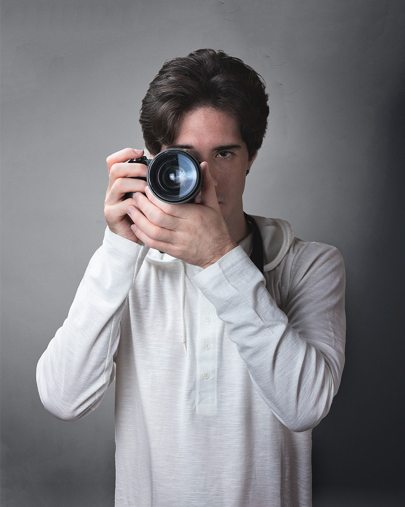
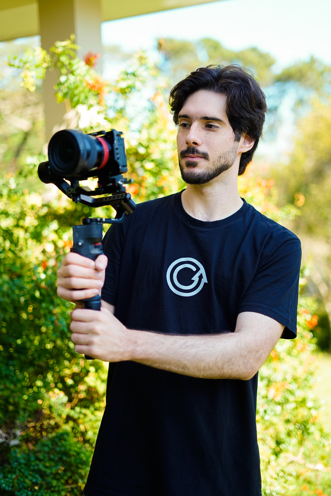
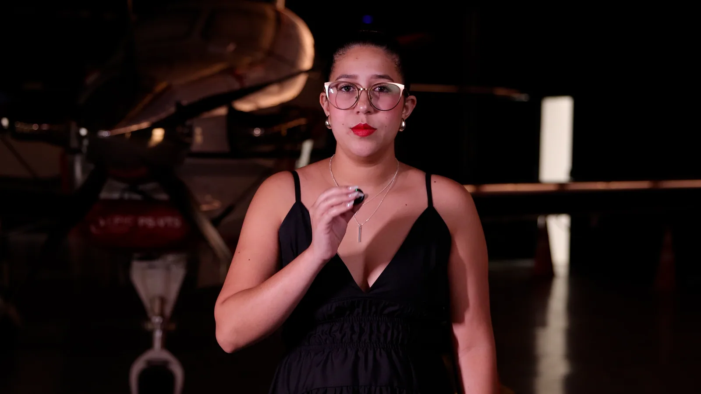
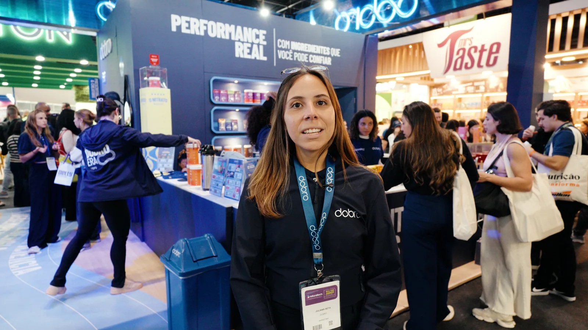
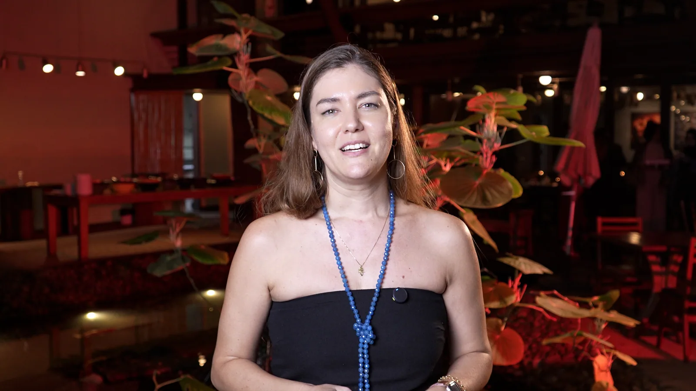

Edição de vídeo
Do material bruto à narrativa final: ritmo, seleção, montagem, sound design, cor e acabamento para cada formato.
ReelsYouTubeInstitucionalEventos
Eu transformo intenção em imagem, som e movimento — do primeiro frame ao último detalhe.
Explorar trabalho01 / 08
O que move o trabalho
Uma boa entrega não começa no software. Começa na escuta: entender a intenção, reconhecer o público e construir a forma certa de dizer.
Começar um projeto


Um olhar entre o técnico e o sensível
Sou Luigi Guerrazzi, editor de vídeo, publicitário e designer gráfico. Trabalho no encontro entre narrativa, estética e intenção para criar peças que não apenas chamam atenção — elas permanecem.
02 / 08
Onde posso entrar
Do material bruto à narrativa final: ritmo, seleção, montagem, sound design, cor e acabamento para cada formato.
Identidade visual, peças digitais e sistemas gráficos que organizam a mensagem e dão consistência à presença da marca.
Um olhar estratégico para transformar briefing em conceito, linguagem visual e uma entrega que faça sentido para o negócio.
03 / 08
Recorte em movimento
04 / 09
Trabalhos selecionados
Role para atravessar a seleção.
Quero construir o próximo05 / 09
Parcerias que viraram entrega
Uma seleção de marcas, negócios e projetos que já passaram pela timeline — cada um com um desafio diferente, todos com espaço para fazer bem feito.



06 / 09
Como a ideia acontece
Um processo simples, próximo e transparente para que cada decisão criativa tenha intenção.
A gente alinha contexto, objetivo, público, referências e o que precisa ser sentido por quem assiste.
Organizo a matéria-prima e encontro a estrutura: o que entra, o que respira e onde a história vira chave.
Montagem, design, som, cor e motion entram em cena em ciclos curtos de revisão.
Arquivos finais organizados e prontos para cada canal, formato e momento da sua comunicação.
07 / 09
Ferramentas a serviço da ideia
08 / 09
Perguntas frequentes
Se a sua dúvida não estiver aqui, me escreva. A conversa também faz parte do processo.
Vídeos para redes sociais, YouTube, eventos, campanhas, conteúdo institucional e projetos de marca. Também posso entrar com design e direção criativa.
Os dois. Posso trabalhar a partir do material que você já tem ou colaborar desde o conceito, roteiro e direção visual para a captação.
Depois de entender escopo, prazo, formatos e referências, envio uma proposta objetiva com etapas, entregáveis e condições. Cada projeto é dimensionado de forma justa.
Sim. O processo é preparado para funcionar remotamente, com troca de arquivos, reuniões e aprovações online. Para projetos presenciais, combinamos a logística.
09 / 09
O próximo projeto começa aqui
Me conte o que você quer colocar no mundo. Eu respondo pelo WhatsApp e a gente encontra o melhor caminho.